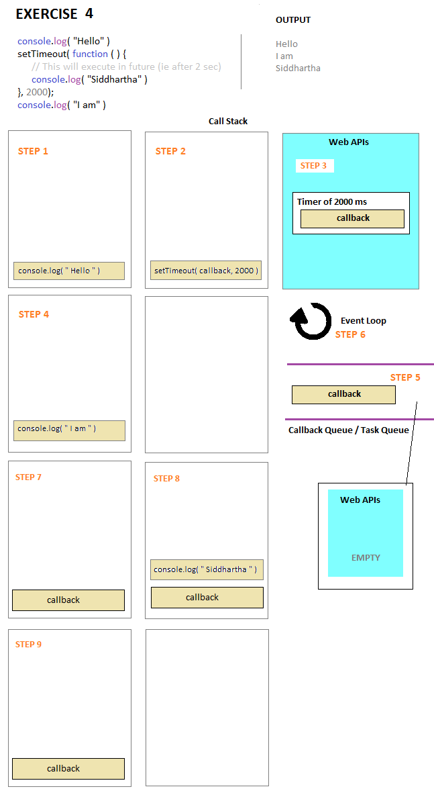

Уроки по JavaScript
Справка, работа с DOM..Прототип.
В JavaScript объекты имеют специальное скрытое свойство [[Prototype]] (так оно названо в
спецификации), которое
либо равно null, либо ссылается на другой объект. Объект, на который ссылается
[[Prototype]], называется "прототипом".
Класс это схема для создания экземпляров объекта, а prototype это экземпляр, которому другие
экземпляры объекта передают работу, prototype это не схема и не шаблон, он просто есть и всё. (Siddhartha Chowdhury)
__proto__ — не то же самое, что [[Prototype]]. Это геттер/сеттер для него.
let animal = {
eats: true,
walk() {
console.log("Animal walk");
}
};
let rabbit = {
jumps: true,
};
rabbit.__proto__ = animal;
// walk взят из прототипа
rabbit.walk(); // Animal walk
Цикл for..in перебирает как свои, так и унаследованные свойства.
Метод hasOwnProperty() возвращает логическое значение, указывающее, содержит ли объект указанное
собственное, не унаследованное свойство. Синтаксис: obj.hasOwnProperty(prop)
Метод Object.keys(obj) возвращает массив строковых элементов, соответствующих именам
перечисляемых свойств, найденных непосредственно в самом объекте. Порядок свойств такой же, как и при ручном
перечислении свойств в объекте через цикл.
У каждой функции по умолчанию уже есть свойство "prototype".
По умолчанию "prototype" – независимый ( он не равен никакому другому ) объект с единственным свойством
constructor, которое ссылается на
функцию-конструктор.
По умолчанию все функции имеют F.prototype = { constructor: F }, поэтому мы можем получить
конструктор объекта через свойство constructor.
Object.getPrototypeOf(obj)(возвращает прототип (то есть, внутреннее свойство
[[Prototype]]) указанного объекта.) или через устаревшее свойство __proto__) и
свойством
prototype в функциях-конструкторах. Первое свойство является свойством каждого экземпляра, а второе
- свойством конструктора.
Наследованные свойства это те, что определены в свойстве prototype (вы можете называть это
подпространством имен), то есть те, которые начинаются с Object.prototype., а не те, которые
начинаются с простого Object. Значение свойства prototype - это объект, который в
основном представляет собой контейнер для хранения свойств и методов, которые мы хотим наследовать объектами,
расположенными дальше по цепочке прототипов.
let obj = {};
console.log(obj.__proto__ === Object.prototype); // true
console.log(Object.prototype.__proto__); // null
Встроенные объекты, такие как Array, Date, Function и другие, хранят свои методы в прототипах.
Вообще __proto__ есть у всех, даже у примитивов(в таком случае создаётся временный объект..):
let a = 1;
a.__proto__ === Number.prototype // true
let b = true;
b.__proto__ === Boolean.prototype // true
// Cоответственно понятно равенство:
const arr-1 = [];
const arr-2 = [];
arr-1.__proto__ === arr-2.__proto__;

У каждого объекта есть прототип. Конструктор функция Foo также имеет свой собственный __proto__,
который является Function.prototype, и который, в свою очередь, также ссылается через свое свойство
__proto__ снова на Object.prototype.
__proto__ ссылается на prototype класса, которым был создан.

Из этого вывод, что prototype есть только у функций ( кроме стрелочных ) и
класса.
Современные способы установки и прямого доступа к прототипу это:
Object.create(proto[, descriptors])– создаёт пустой объект со свойством[[Prototype]], указанным какproto(может бытьnull), и необязательными дескрипторами свойств.Object.getPrototypeOf(obj)– возвращает свойство [[Prototype]]объектаobj(то же самое, что и геттер__proto__).Object.setPrototypeOf(obj, proto)– устанавливает свойство[[Prototype]]объектаobjкакproto(то же самое, что и сеттер__proto__).
let animal = {
eats: true
};
// создаём новый объект с прототипом animal
let rabbit = Object.create(animal);
alert(rabbit.eats); // true
alert(Object.getPrototypeOf(rabbit) === animal); // получаем прототип объекта rabbit
Object.setPrototypeOf(rabbit, {}); // заменяем прототип объекта rabbit на {}
Классы.
В объектно-ориентированном программировании класс – это расширяемый шаблон кода для создания объектов, который
устанавливает в них начальные значения (свойства) и реализацию поведения (методы).
"Пикиведия"
function Func(name){
this.name = name
}
Func.prototype.hello = function(){
console.log(this.name)
}
// то же самое, что и
class Func{
constructor(name){
this.name = name
}
hello(){
console.log(this.name)
}
}
Отличия класса от чистой функции:
- В отличие от обычных функций, конструктор класса не может быть вызван без new
- Методы класса являются неперечислимыми. Определение класса устанавливает флаг
enumerableвfalseдля всех методов в"prototype". - Классы всегда используют
use strict.
Наследование классов
class Animal {
constructor(name) {
this.speed = 0;
this.name = name;
}
run(speed) {
this.speed = speed;
alert(`${this.name} бежит со скоростью ${this.speed}.`);
}
stop() {
this.speed = 0;
alert(`${this.name} стоит.`);
}
}
// Наследуем от Animal указывая "extends Animal"
class Rabbit extends Animal {
hide() {
alert(`${this.name} прячется!`);
}
}
let rabbit = new Rabbit("Белый кролик");
rabbit.run(5); // Белый кролик бежит со скоростью 5.
rabbit.hide(); // Белый кролик прячется!>
// Rabbit.prototype.__proto__ будет равен Animal.prototype, так что методы были унаследованы.
constructor - специальный метод, служащий для создания и инициализации объектов, созданных с
использованием class.
Согласно спецификации, если класс расширяет другой класс и не имеет конструктора, то автоматически создаётся такой «пустой» конструктор:
class Rabbit extends Animal {
constructor(...args) {
super(...args);
}
}
Ключевое слово super() используется как функция, вызывающая родительский конструктор. Её
необходимо вызвать до первого обращения к ключевому слову this в теле конструктора.
Наследование с конструктором:
class Animal {
constructor(name) {
this.speed = 0;
this.name = name;
}
display(){
console.log(this.name, this.speed);
}
}
class Rabbit extends Animal {
constructor(name, earLength) {
super(name);
this.earLength = earLength;
}
display(){
super.display();
console.log("super.display() вызывает реализацию метода из класса-родителя");
}
}
let rabbit = new Rabbit("Белый кролик", 10);
alert(rabbit.name); // Белый кролик
alert(rabbit.earLength); // 10
console.log(rabbit.display()) // // Белый кролик 0
// super.display() вызывает реализацию метода из класса-родителя
Статические методы
class Person{
constructor(name, age){
this.name = name;
this.age = age;
}
static nameToUpper(person){
return person.name.toUpperCase();
}
display(){
console.log(this.name, this.age);
}
}
let tom = new Person("Tom Soyer", 34);
let personName = Person.nameToUpper(tom);
console.log(personName); // TOM SOYER
В данном случае определен статический метод nameToUpper(). В качестве параметра он принимает
объект Person и переводит его имя в верхний регистр. Поскольку статический метод относится классу вцелом, а не к
объекту, то мы НЕ можем использовать в нем ключевое слово this и через него обращаться к свойствам
объекта.
Синхронный и асинхронный JavaScript с Async/Await
Синхронный JS
JavaScript сам по себе однопоточный, что означает то, что только один блок кода может запускаться за раз.
Движок JavaScript( V8 в Google Chrome и Node.js, SpiderMonkey от Мазилы, Chakra для IE и т.д ) это программа, которая используется для обработки заданного кода и конвертирования его в конкретные команды для их выполнения.
- В стек вызовов попадает первое выполняемое объявление нашего скрипта — вызов функции
First(). Во время выполнения в области видимости функцииFirst(), наш движок встречает вызов ещё одной функции —Second(). - Вызов функции
Second()отправляется в стек вызовов и движок начинает выполнение её содержимого, снова встречаясь с ещё одной функциейThird()внутриSecond(). - Функция
Third()также отправляется в стек запросов и движок начинается её выполнение. - Когда движок сталкивается с
return; внутри функцииThird(), то это означает завершениеThird(). СледовательноThird()выкидывается из стека как завершенное исполнение. На этом моменте движок возвращается к выполнениюSecond(). - Итак, как только движок столкнется с
return;, функцияSecond()будет выкинута из стека и начнется выполнениеFirst(). Теперь тут нет объявления return внутри области видимостиFirst(), так что выполнится только код до конца его области видимости иFirst()будет выкинут из стека на шаге 6.
Асинхронные задачи
- Шаг 2: С этого момента
setTimeout(callback, 2000)отправляется в стек запросов. Как мы можем видеть, тут имеются компоненты callback и задержка в 2000ms.setTimeout()не является частью JavaScript движка, это по сути Web API включенное в среду браузера как дополнительный функционал. - Шаг 3: Итак, Web API браузера берет на себя callback и запускает таймер в 2000ms, оставляя на фоне setTimeout(), которое сделало свою работу и выкинуто из стека.
- Шаг 4: Следующая строка в нашем скрипте это
console.log( "I am" ), отправленное в стек и выкинутое оттуда после выполнения. - Шаг 5: Теперь у нас есть callback в WebAPI, который собирается сработать по прошествии 2000ms. Но WebAPI не может напрямую как попало закидывать что-то в стек запросов, потому что это может создать прерывание для другого кода, выполняемого в JavaScript движке, именно в этот момент. Так что callback поставится в очередь выполнения задач после 2000ms. А теперь WebAPI пуст и свободен.
- Шаг 6: Цикл событий или Event Loop — ответственный за взятие первого элемента из очереди задач и передачу его в стек запросов, только тогда, когда стек пуст и свободен. На этом шаге нашего уравнения, стек запросов пуст.
- Шаг 7: Итак, callback отправлен в стек запросов, так как он был пуст и свободен. И тут же выполнился.
- Шаг 8: Далее идет выполнение кода
console.log("Siddhartha"), который находится в области видимости callback, следовательно,console.log("Siddhartha")отправляется в стек запросов. - Шаг 9: После того, как
console.log("Siddhartha") выполнен, он выкидывается из стека запросов и JavaScript приходит к завершению выполнения callback. Который в свою очередь после своего завершения будет выкинут из стека запросов. А вот и ответ на вопрос как.
Промисы
Промис это объект, который представляет собой асинхронный таск, который должен завершиться.
asaa...